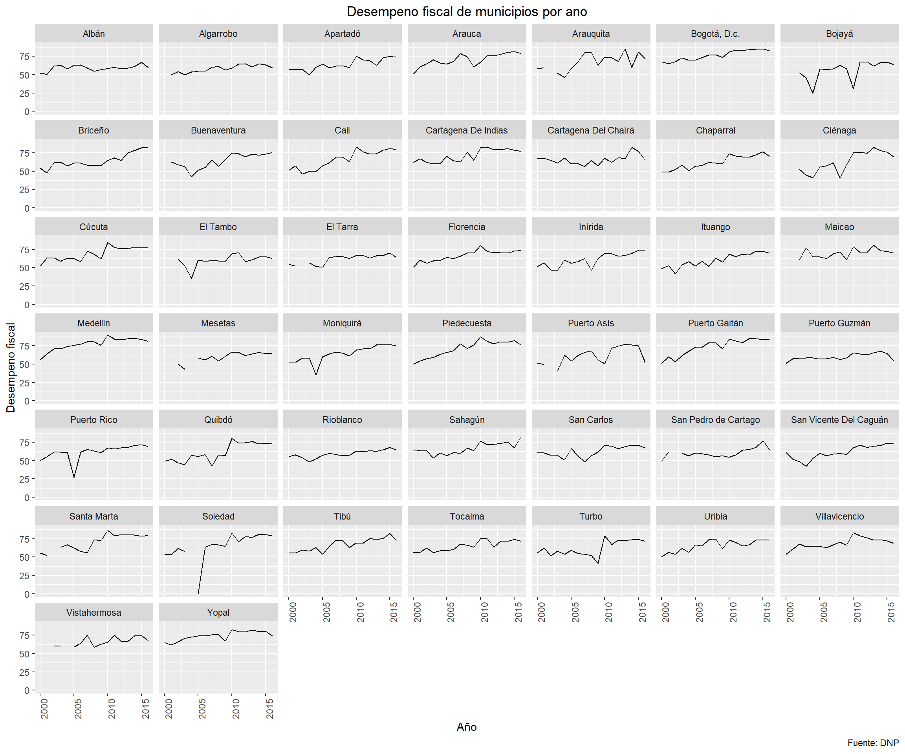
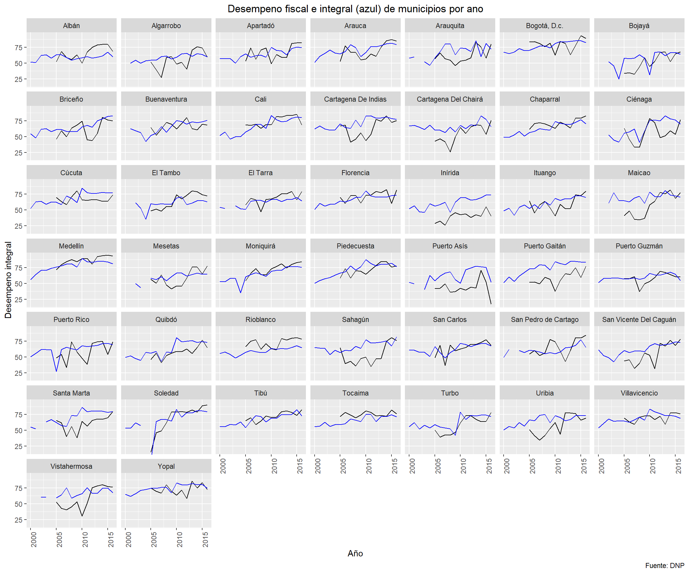
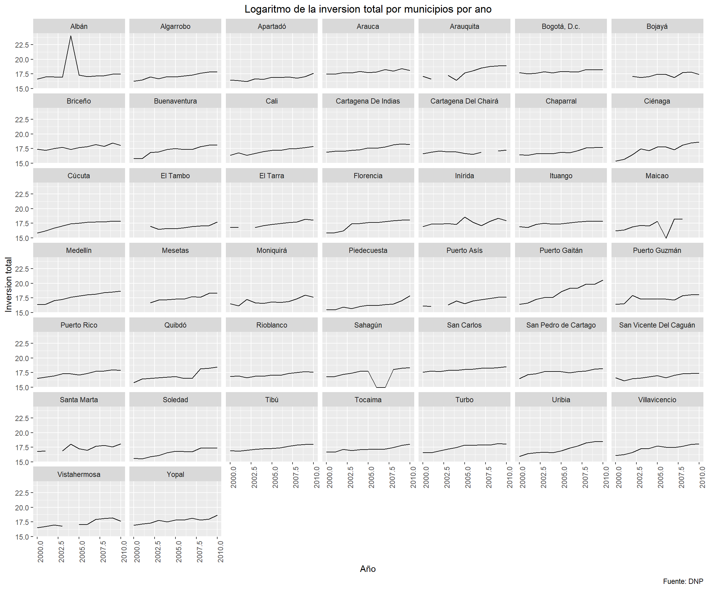
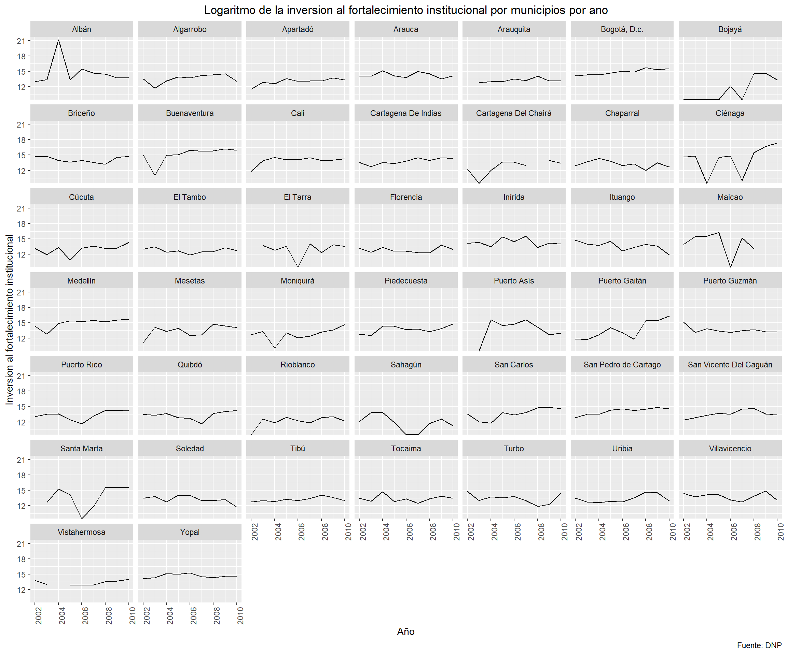
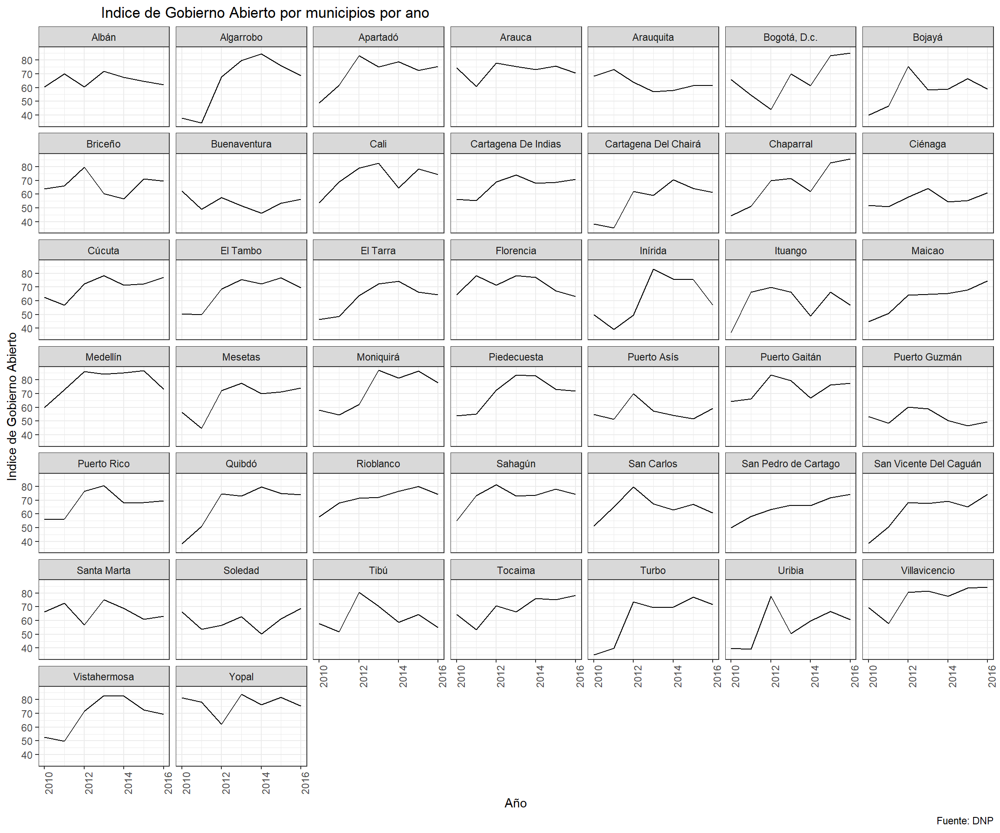

Con este codigo se importan todas las bases de datos y todos los paquetes necesarios.
#ANTES DE CORRER, ¡CORRER LA PESTANA "CODIGO PARA ARRANCAR TODO"!
#Set Working Directory
setwd("C:/Users/felig/Dropbox/Proyecto Juan Camilo")
rm(list=ls())
load("C:/Users/felig/Dropbox/Proyecto Juan Camilo/MergeBases_Environment.RData")
#Cargar paquetes
library(readstata13)
library(tidyr)
library(dplyr)
library(data.table)
library(readxl)
library(doBy)
library(vtable)
library(plyr)
library(gridExtra)
library(grid)
library(purrr)
library(psych)
library(ggplot2)
library(psych)
library(Hmisc)
library(matrixStats)
library(ggpubr)
library(vtable)
library(ggthemes)#Cambiarle los nombres a algunos municipios que no estan codificados igual
cede_gobierno_44$municipio[cede_gobierno_44$municipio=="Bojaya"] <- "Bojayá"
cede_gobierno_44$municipio[cede_gobierno_44$municipio=="Bogotá, D.C."] <- "Bogotá, D.c."
cede_gobierno_44$municipio[cede_gobierno_44$municipio=="Cartagena"] <- "Cartagena De Indias"
cede_gobierno_44$municipio[cede_gobierno_44$municipio=="Bojaya"] <- "Bojayá"
cede_gobierno_44$municipio[cede_gobierno_44$municipio=="Cartagena del Chairá"] <- "Cartagena Del Chairá"
cede_gobierno_44$municipio[cede_gobierno_44$municipio=="San Vicente del Caguán"] <- "San Vicente Del Caguán"Esta seccion esta dividiad por variables. Dentro de cada variable hay dos secciones. En la primer se observa un grafico que muestra las tendencias de la variable para los 44 municipios del ACDI-VOCA. *** La segunda seccion tiene los descriptivos de esas variables. Para mas informacion, acercarse a la descripcion de esa seccion.
Este indice mide globalmente el resultado fiscal alcanzado en cada año y se encuentra en una escala de 0 a 100, donde los valores cercanos a 0 reflejan un bajo desempeño fiscal y valores cercanos a 100 significan que la entidad territorial logro en conjunto los siguientes resultados (DNP, 2013): Buen balance en su desempeño fiscal, Suficientes recursos para sostener su funcionamiento Cumplimiento de gasto de funcionamiento segun la Ley 617/00, Importante nivel de recursos propios (solvencia tributaria) como contrapartida a los recursos de SGP, Altos niveles de inversion, Adecuada capacidad de respaldo del servicio de su deuda, Generacion de ahorro corriente, necesario para garantizar su solvencia financiera
En este codigo se crea el grafico que muestra las tendencias en funcion del tiempo para todos los departamentos del cuestionario ACDI-VOCA.
cede_gobierno_44 %>%
ggplot(aes(x = ano, y = DF_desemp_fisc)) +
geom_line() +
scale_color_manual(values = palette) +
facet_wrap(~municipio) +
labs(y='Desempeno fiscal', title='Desempeno fiscal de municipios por ano', x= 'Año', caption="Fuente: DNP") +
theme(plot.title = element_text(hjust = 0.5), axis.text.x = element_text(angle=90))+
coord_cartesian(xlim = c(2000:2016),
ylim=c(cede_gobierno_44$DF_desemp_fisc[which.min(cede_gobierno_44$DF_desemp_fisc)],
cede_gobierno_44$DF_desemp_fisc[which.max(cede_gobierno_44$DF_desemp_fisc)]))
En esta seccion se generan los descriptivos agregados de la variable.
Aqui se genera el collapse por anos para cada municipio. Es decir, aqui se encuentran los descriptivos de la variable para cada municipio, en donde se hizo un collapse por anos.
El nombre de la variable agregada es : descrip_
descrip_desemp_fisc <- summaryBy(DF_desemp_fisc ~ municipio, cede_gobierno_44, FUN=c(sum,mean,sd), na.rm=T ) #Codigo para hacer descriptivos de los homicidios (collapse por anos)
descrip_desemp_fisc %<>% arrange(municipio)
print(descrip_desemp_fisc)## municipio DF_desemp_fisc.sum DF_desemp_fisc.mean
## 1 Albán 25186.56 59.26249
## 2 Algarrobo 23336.01 58.34003
## 3 Apartadó 27260.27 64.14181
## 4 Arauca 29972.11 70.52261
## 5 Arauquita 27000.89 67.50223
## 6 Bogotá, D.c. 32497.52 76.46476
## 7 Bojayá 21070.31 56.18749
## 8 Briceño 27375.99 64.41410
## 9 Buenaventura 25725.22 64.31304
## 10 Cali 28058.18 66.01925
## 11 Cartagena De Indias 30281.95 71.25164
## 12 Cartagena Del Chairá 27971.98 65.81643
## 13 Chaparral 26503.91 62.36213
## 14 Ciénaga 24643.83 61.60958
## 15 Cúcuta 29268.79 68.86774
## 16 El Tambo 23783.92 59.45980
## 17 El Tarra 24672.93 61.68233
## 18 Florencia 28215.01 66.38826
## 19 Inírida 25918.10 60.98377
## 20 Ituango 25613.74 60.26763
## 21 Maicao 27392.08 68.48019
## 22 Medellín 32965.02 77.56475
## 23 Mesetas 22210.15 59.22707
## 24 Moniquirá 27251.85 64.12201
## 25 Piedecuesta 30269.02 71.22122
## 26 Puerto Asís 24719.23 61.79808
## 27 Puerto Gaitán 31308.24 73.66645
## 28 Puerto Guzmán 25454.99 59.89409
## 29 Puerto Rico 26226.17 61.70864
## 30 Quibdó 26177.07 61.59310
## 31 Rioblanco 25186.57 59.26253
## 32 Sahagún 28328.54 66.65539
## 33 San Carlos 26571.62 62.52147
## 34 San Pedro de Cartago 24262.45 60.65613
## 35 San Vicente Del Caguán 26129.46 61.48109
## 36 Santa Marta 28163.60 70.40900
## 37 Soledad 25996.73 64.99182
## 38 Tibú 28466.51 66.98002
## 39 Tocaima 27782.30 65.37012
## 40 Turbo 26439.36 62.21026
## 41 Uribia 27945.95 65.75518
## 42 Villavicencio 29303.77 68.95005
## 43 Vistahermosa 23322.86 66.63673
## 44 Yopal 31586.52 74.32122
## DF_desemp_fisc.sd
## 1 4.021548
## 2 4.868529
## 3 7.335719
## 4 8.270680
## 5 10.924380
## 6 6.746336
## 7 12.490966
## 8 9.497140
## 9 9.556422
## 10 11.985808
## 11 8.287958
## 12 6.381901
## 13 8.900425
## 14 14.359703
## 15 8.795271
## 16 7.777656
## 17 6.074198
## 18 7.201939
## 19 8.948712
## 20 8.776457
## 21 8.052202
## 22 8.298412
## 23 6.800743
## 24 10.525358
## 25 10.682033
## 26 11.077218
## 27 10.878424
## 28 4.345519
## 29 10.166626
## 30 12.144065
## 31 4.968069
## 32 7.400196
## 33 7.025342
## 34 6.196305
## 35 8.875115
## 36 10.749073
## 37 19.293216
## 38 8.059873
## 39 6.749256
## 40 10.289768
## 41 7.548263
## 42 6.967997
## 43 5.901083
## 44 6.148040A continuacion se generan las variables necesarias para hacer el \(\Delta\). Para obtener el \(\Delta\) se hace la diferencia de la variable entre los primeros 5 anos y los ultimos 5 anos de los datos disponibles. Por ejemplo, si la variable de interes se recolecto entre 1997 y 2016, el \(\Delta\) sera la reste entre el collapase de los anos 1997 a 2001 y el collapse de los anos 2012 a 2016. El nombre de la varible \(\Delta\) es: diff_
descrip_desemp_fisc_5antes <- cede_gobierno_44 %>%
filter(ano<"2005-04-27") #Codigo para seleccionar solamente las variables que sean menores al ano 2008
descrip_desemp_fisc_5antes <- summaryBy(DF_desemp_fisc ~ municipio, descrip_desemp_fisc_5antes, FUN=c(sum,mean,sd), na.rm=T ) #Descriptivos de esos anos.
descrip_desemp_fisc_5despues <- cede_gobierno_44 %>%
filter(ano>"2012-04-27") #Codigo para seleccionar solamente las variables que sean mayores al ano 2008.
descrip_desemp_fisc_5despues <- summaryBy(DF_desemp_fisc ~ municipio, descrip_desemp_fisc_5despues, FUN=c(sum,mean,sd), na.rm=T ) #Descriptivos de esos anos.Codigo para calcular el \(\Delta\)
diff_desemp_fisc_mean <- descrip_desemp_fisc_5antes$DF_desemp_fisc.mean -descrip_desemp_fisc_5despues$DF_desemp_fisc.mean
diff_desemp_fisc_sd <- descrip_desemp_fisc_5antes$DF_desemp_fisc.sd -descrip_desemp_fisc_5despues$DF_desemp_fisc.sd #Sacar diferencias entre esos estadisticos. Un valor negativo es que hay mas ataques en los ultimos 5 anos.
print(diff_desemp_fisc_mean)## [1] -3.753393 -9.598813 -13.752079 -16.634993 -19.718782 -15.424402
## [7] -19.430496 -21.952868 -19.118087 -26.460359 -15.337144 -8.155480
## [13] -19.370559 -29.822040 -16.329680 -10.801339 -13.641515 -13.375253
## [19] -18.051973 -19.131169 -11.186996 -15.231943 -14.203141 -23.272581
## [25] -21.178257 -18.473801 -23.134447 -6.289786 -17.178564 -22.991054
## [31] -10.740434 -13.964213 -10.833514 -10.945557 -18.860533 -19.533545
## [37] -34.191280 -18.283720 -14.137117 -16.310214 -14.006204 -9.167460
## [43] -10.594037 -10.795986La evaluacion del desempeno integral tiene por objeto evaluar, valga la redundancia, el desempeno de la gestion de las entidades territoriales en sus competencias fundamentales, basado en: los resultados obtenidos, en los compromisos adquiridos por estas entidades en los planes de desarrollo, el marco del proceso de descentralizacion de competencias y recursos, asi como, el cumplimiento del ordenamiento juridico que lo fundamenta.
En este codigo se crea el grafico que muestra las tendencias en funcion del tiempo para todos los departamentos del cuestionario ACDI-VOCA.
cede_gobierno_44 %>%
ggplot(aes(x = ano, y = DI_desemp_int)) +
geom_line() +
scale_color_manual(values = palette) +
facet_wrap(~municipio) +
labs(y='Desempeno integral', title='Desempeno integral de municipios por ano', x= 'Ano', caption="Fuente: DNP") +
theme(plot.title = element_text(hjust = 0.5), axis.text.x = element_text(angle=90))+
coord_cartesian(xlim = c(2005:2016),
ylim=c(cede_gobierno_44$DI_desemp_int[which.min(cede_gobierno_44$DI_desemp_int)],
cede_gobierno_44$DI_desemp_int[which.max(cede_gobierno_44$DI_desemp_int)]))Grafico del desempeno integral junto con el fiscal
cede_gobierno_44 %>%
ggplot(aes(x = ano)) +
geom_line(aes(y = DI_desemp_int)) +
geom_line(aes(y = DF_desemp_fisc), color="blue") +
labs(color="Desempeno integral")+
facet_wrap(~municipio) +
labs(y='Desempeno integral', title='Desempeno fiscal e integral (azul) de municipios por ano', x= 'Año', caption="Fuente: DNP") +
theme(plot.title = element_text(hjust = 0.5), axis.text.x = element_text(angle=90))+
coord_cartesian(xlim = c(2000:2016),
ylim=c(cede_gobierno_44$DI_desemp_int[which.min(cede_gobierno_44$DI_desemp_int)],
cede_gobierno_44$DI_desemp_int[which.max(cede_gobierno_44$DI_desemp_int)]))
En esta seccion se generan los descriptivos agregados de la variable.
Aqui se genera el collapse por anos para cada municipio. Es decir, aqui se encuentran los descriptivos de la variable para cada municipio, en donde se hizo un collapse por anos.
El nombre de la variable agregada es : descrip_
descrip_desemp_int <- summaryBy(DI_desemp_int ~ municipio, cede_gobierno_44, FUN=c(sum,mean,sd), na.rm=T ) #Codigo para hacer descriptivos de los homicidios (collapse por anos)
descrip_desemp_int %<>% arrange(municipio)
print(descrip_desemp_int)## municipio DI_desemp_int.sum DI_desemp_int.mean
## 1 Albán 19921.47 66.40489
## 2 Algarrobo 16465.71 54.88571
## 3 Apartadó 20106.31 67.02104
## 4 Arauca 20860.76 69.53588
## 5 Arauquita 18608.37 62.02791
## 6 Bogotá, D.c. 23943.65 79.81217
## 7 Bojayá 15530.59 51.76863
## 8 Briceño 18396.71 61.32237
## 9 Buenaventura 19842.97 66.14324
## 10 Cali 22234.11 74.11371
## 11 Cartagena De Indias 18922.15 63.07382
## 12 Cartagena Del Chairá 16407.45 54.69149
## 13 Chaparral 21250.62 70.83541
## 14 Ciénaga 16790.69 55.96896
## 15 Cúcuta 20224.19 67.41396
## 16 El Tambo 19493.67 64.97891
## 17 El Tarra 20493.17 68.31056
## 18 Florencia 21644.18 72.14727
## 19 Inírida 11926.50 39.75500
## 20 Ituango 17902.48 59.67492
## 21 Maicao 17497.27 58.32425
## 22 Medellín 26029.73 86.76577
## 23 Mesetas 17605.37 58.68457
## 24 Moniquirá 21852.52 72.84175
## 25 Piedecuesta 21650.77 72.16923
## 26 Puerto Asís 12911.45 43.03817
## 27 Puerto Gaitán 17590.72 58.63573
## 28 Puerto Guzmán 17414.89 58.04965
## 29 Puerto Rico 17565.69 58.55230
## 30 Quibdó 17303.02 57.67674
## 31 Rioblanco 21714.45 72.38149
## 32 Sahagún 16007.13 53.35712
## 33 San Carlos 19182.23 63.94077
## 34 San Pedro de Cartago 19526.97 65.08989
## 35 San Vicente Del Caguán 16553.26 55.17754
## 36 Santa Marta 18365.93 61.21975
## 37 Soledad 20706.96 69.02320
## 38 Tibú 21692.60 72.30865
## 39 Tocaima 22635.34 75.45113
## 40 Turbo 17600.97 58.66990
## 41 Uribia 17420.44 58.06814
## 42 Villavicencio 20991.55 69.97183
## 43 Vistahermosa 17605.68 58.68561
## 44 Yopal 21779.45 72.59817
## DI_desemp_int.sd
## 1 10.239091
## 2 14.077682
## 3 11.341393
## 4 11.752489
## 5 11.133396
## 6 8.732603
## 7 13.061704
## 8 12.777582
## 9 6.805283
## 10 7.650715
## 11 13.782988
## 12 13.690042
## 13 6.493170
## 14 14.371764
## 15 5.443014
## 16 11.643352
## 17 8.795576
## 18 7.508825
## 19 7.523801
## 20 11.387228
## 21 17.559274
## 22 6.594914
## 23 12.385153
## 24 8.908927
## 25 8.350580
## 26 11.710620
## 27 10.494996
## 28 8.244658
## 29 14.198295
## 30 8.922810
## 31 7.097689
## 32 15.546253
## 33 10.716338
## 34 12.907683
## 35 16.065114
## 36 11.369414
## 37 20.979729
## 38 6.899996
## 39 3.637860
## 40 13.127228
## 41 14.889568
## 42 6.157653
## 43 16.971782
## 44 7.586489A continuacion se generan las variables necesarias para hacer el \(\Delta\). Para obtener el \(\Delta\) se hace la diferencia de la variable entre los primeros 5 anos y los ultimos 5 anos de los datos disponibles. Por ejemplo, si la variable de interes se recolecto entre 1997 y 2016, el \(\Delta\) sera la reste entre el collapase de los anos 1997 a 2001 y el collapse de los anos 2012 a 2016. El nombre de la varible \(\Delta\) es: diff_
descrip_desemp_int_5antes <- cede_gobierno_44 %>%
filter(ano<"2005-04-27") #Codigo para seleccionar solamente las variables que sean menores al ano 2008
descrip_desemp_int_5antes <- summaryBy(DI_desemp_int ~ municipio, descrip_desemp_int_5antes, FUN=c(sum,mean,sd), na.rm=T ) #Descriptivos de esos anos.
descrip_desemp_int_5despues <- cede_gobierno_44 %>%
filter(ano>"2012-04-27") #Codigo para seleccionar solamente las variables que sean mayores al ano 2008.
descrip_desemp_int_5despues <- summaryBy(DI_desemp_int ~ municipio, descrip_desemp_int_5despues, FUN=c(sum,mean,sd), na.rm=T ) #Descriptivos de esos anos. Codigo para calcular el \(\Delta\)
diff_desemp_int_mean <- descrip_desemp_int_5antes$DI_desemp_int.mean -descrip_desemp_int_5despues$DI_desemp_int.mean
diff_desemp_int_sd <- descrip_desemp_int_5antes$DI_desemp_int.sd -descrip_desemp_int_5despues$DI_desemp_int.sd #Sacar diferencias entre esos estadisticos. Un valor negativo es que hay mas ataques en los ultimos 5 anos.
print(diff_desemp_int_mean)## [1] -24.4954429 -18.1484504 -23.0100038 -30.2110024 -16.9756597
## [6] 2.6826478 -29.0607604 -25.4223930 -0.9490785 -11.1922495
## [11] -9.4522479 -23.4633707 -14.5383434 2.5928041 3.0389555
## [16] -27.8183722 -17.0303772 -5.6203377 -15.9094084 -5.5644718
## [21] -34.8536905 -21.7782119 -16.8486526 -26.4234363 -22.1866096
## [26] -3.9437771 -16.9118602 -5.7938170 -20.7657391 -19.3014666
## [31] -12.3897348 -5.4426565 -23.1462247 -21.7976012 -28.4863616
## [36] -5.6156437 -69.0374781 -13.6147078 -4.1933346 -17.8967940
## [41] -21.5439391 -3.5598671 -25.0567273 -4.3333455Esta variable mide: Inversion total (inv_total = inv_a_educacion + inv_crecusion + inv_fortinst + inv_promdllo + inv_sp + inv_tranporte + inv_cult + inv_agropecuario + inv_aguasani + inv_ambiental + inv_dllocomun+inv_dyr + inv_en_educacion + inv_equipamiento + inv_gruposvunera + inv_en_justicia +inv_prevdesastr + inv_en_salud + inv_en_vias + inv_en_vivienda)
Observe que, para ciertas variables, se debe calcular un indice que normalice las poblaciones de cada municipio. Esta variable tiene esa transformacion. Esta variable se transforma para que quede medida por cien mil habitantes. Asi, la transformacion que se le hace a estas variables es:
\(T = \frac{N_{t}}{P_{t}} \times 100 000\)
En donde: \(T=\) La tasa por 100 mil habitantes \(N_{t}=\) Numero total de la variable de interes \(P_{t}=\) Poblacion total en el periodo \(t\)
Por lo tanto, generamos el siguiente codigo para poder crear esta variable. El nombre de esas variables es **_cienmil**
En algunos casos, como en este, se saca el logaritmo para bajar la magnitud de la variable pero manteniendo las variaciones.
\(T = \ln(\frac{N_{t}}{P_{t}} \times 100 000)\)
#Loop para saber poder saber qué observaciones concuerdan tanto en el año del censo como en el año del conflicto. Esto es necesario para generar el índice porque debe haber concordancia en el año de ambas bases.
a <- c()
cede_gobierno_44$ano_base_general <- substring(cede_gobierno_44$ano_base_general,1,4)
cede_gobierno_44$ano_base_general <- as.numeric(cede_gobierno_44$ano_base_general)
for(i in 1:nrow(cede_gobierno_44)){
if(cede_gobierno_44$ano[i]==cede_gobierno_44$ano_base_general[i]){
a <- c(a,i)
}
}
#Limpiamos base de datos para que queden solamente las observaciones que concuerden en año de conflicto y en año del censo
cede_gobierno_44_inv <- cede_gobierno_44[a,]
cede_gobierno_44_inv <- cede_gobierno_44_inv %>%
dplyr::mutate(inv_total_cienmil=log((inv_total/pobl_tot)*100000)) #Se saca el logaritmo para reducir la magnitudEn este codigo se crea el grafico que muestra las tendencias en funcion del tiempo para todos los departamentos del cuestionario ACDI-VOCA.
cede_gobierno_44_inv %>%
ggplot(aes(x = ano, y = inv_total_cienmil)) +
geom_line() +
scale_color_manual(values = palette) +
facet_wrap(~municipio) +
labs(y='Inversion total', title='Logaritmo de la inversion total por municipios por ano', x= 'Año', caption="Fuente: DNP") +
theme(plot.title = element_text(hjust = 0.5), axis.text.x = element_text(angle=90))+
coord_cartesian(xlim = seq(2000, 2010, by=1))
En esta seccion se generan los descriptivos agregados de la variable.
Aqui se genera el collapse por anos para cada municipio. Es decir, aqui se encuentran los descriptivos de la variable para cada municipio, en donde se hizo un collapse por anos.
El nombre de la variable agregada es : descrip_
descrip_inv_total_cienmil <- summaryBy(inv_total_cienmil ~ municipio, cede_gobierno_44_inv, FUN=c(sum,mean,sd), na.rm=T ) #Codigo para hacer descriptivos de los homicidios (collapse por anos)
descrip_inv_total_cienmil %<>% arrange(municipio)
print(descrip_inv_total_cienmil)## municipio inv_total_cienmil.sum inv_total_cienmil.mean
## 1 Albán 195.2280 17.74800
## 2 Algarrobo 188.3312 17.12102
## 3 Apartadó 184.5786 16.77988
## 4 Arauca 196.5275 17.86614
## 5 Arauquita 178.2376 17.82376
## 6 Bogotá, D.c. 196.8762 17.89784
## 7 Bojayá 155.7857 17.30952
## 8 Briceño 195.3404 17.75821
## 9 Buenaventura 189.0850 17.18954
## 10 Cali 188.1505 17.10459
## 11 Cartagena De Indias 193.1028 17.55480
## 12 Cartagena Del Chairá 169.0237 16.90237
## 13 Chaparral 186.5684 16.96076
## 14 Ciénaga 190.2113 17.29194
## 15 Cúcuta 189.5362 17.23056
## 16 El Tambo 168.4091 16.84091
## 17 El Tarra 173.9394 17.39394
## 18 Florencia 189.9324 17.26658
## 19 Inírida 193.9598 17.63271
## 20 Ituango 192.1959 17.47235
## 21 Maicao -Inf -Inf
## 22 Medellín 194.3251 17.66592
## 23 Mesetas 174.3763 17.43763
## 24 Moniquirá 186.5506 16.95914
## 25 Piedecuesta 178.7313 16.24830
## 26 Puerto Asís 168.8305 16.88305
## 27 Puerto Gaitán 202.6043 18.41857
## 28 Puerto Guzmán 191.2404 17.38549
## 29 Puerto Rico 190.6527 17.33206
## 30 Quibdó 186.7601 16.97819
## 31 Rioblanco 188.4036 17.12760
## 32 Sahagún -Inf -Inf
## 33 San Carlos 198.1623 18.01475
## 34 San Pedro de Cartago 193.0548 17.55044
## 35 San Vicente Del Caguán 185.2208 16.83826
## 36 Santa Marta 173.9756 17.39756
## 37 Soledad 182.2280 16.56618
## 38 Tibú 191.3943 17.39948
## 39 Tocaima 189.2438 17.20398
## 40 Turbo 192.3812 17.48920
## 41 Uribia 189.3541 17.21401
## 42 Villavicencio 190.0010 17.27282
## 43 Vistahermosa 172.9920 17.29920
## 44 Yopal 194.9000 17.71819
## inv_total_cienmil.sd
## 1 2.0953488
## 2 0.5311555
## 3 0.3858226
## 4 0.3045180
## 5 0.9411664
## 6 0.2445761
## 7 0.3457146
## 8 0.3824210
## 9 0.8120659
## 10 0.5145462
## 11 0.4920383
## 12 0.2354628
## 13 0.5095171
## 14 1.0600037
## 15 0.6930016
## 16 0.4342259
## 17 0.5137744
## 18 0.8601373
## 19 0.5122668
## 20 0.3598830
## 21 NaN
## 22 0.8016582
## 23 0.5471647
## 24 0.5433214
## 25 0.7131583
## 26 0.5950522
## 27 1.4143234
## 28 0.5621678
## 29 0.4865284
## 30 0.8807797
## 31 0.3458058
## 32 NaN
## 33 0.2952332
## 34 0.4678136
## 35 0.4091786
## 36 0.4957058
## 37 0.6868757
## 38 0.4365076
## 39 0.4245734
## 40 0.5944031
## 41 0.8943880
## 42 0.6672960
## 43 0.6074247
## 44 0.4836667A continuacion se generan las variables necesarias para hacer el \(\Delta\). Para obtener el \(\Delta\) se hace la diferencia de la variable entre los primeros 5 anos y los ultimos 5 anos de los datos disponibles. Por ejemplo, si la variable de interes se recolecto entre 1997 y 2016, el \(\Delta\) sera la reste entre el collapase de los anos 1997 a 2001 y el collapse de los anos 2012 a 2016. El nombre de la varible \(\Delta\) es: diff_
descrip_inv_total_cienmil_5antes <- cede_gobierno_44_inv %>%
filter(ano<2005) #Codigo para seleccionar solamente las variables que sean menores al ano 2008
descrip_inv_total_cienmil_5antes <- summaryBy(inv_total_cienmil ~ municipio, descrip_inv_total_cienmil_5antes, FUN=c(sum,mean,sd), na.rm=T ) #Descriptivos de esos anos.
descrip_inv_total_cienmil_5despues <- cede_gobierno_44_inv %>%
filter(ano>2005) #Codigo para seleccionar solamente las variables que sean mayores al ano 2008.
descrip_inv_total_cienmil_5despues <- summaryBy(inv_total_cienmil ~ municipio, descrip_inv_total_cienmil_5despues, FUN=c(sum,mean,sd), na.rm=T ) #Descriptivos de esos anos. Codigo para calcular el \(\Delta\)
diff_inv_total_cienmil_mean <- descrip_inv_total_cienmil_5antes$inv_total_cienmil.mean -descrip_inv_total_cienmil_5despues$inv_total_cienmil.mean
diff_inv_total_cienmil_sd <- descrip_inv_total_cienmil_5antes$inv_total_cienmil.sd -descrip_inv_total_cienmil_5despues$inv_total_cienmil.sd #Sacar diferencias entre esos estadisticos. Un valor negativo es que hay mas ataques en los ultimos 5 anos.
print(diff_inv_total_cienmil_mean)## [1] 1.03993496 -0.87137203 -0.60185569 -0.47051950 -1.76403483
## [6] -0.39078194 -0.44258433 -0.64239712 -1.23799982 -0.91384668
## [11] -0.88591098 -0.04745714 -0.85563224 -1.62399458 -1.11119601
## [16] -0.54222379 -0.93837988 -1.33725048 -0.49173926 -0.58743297
## [21] Inf -1.41652774 -0.88526002 -0.69345619 -1.08358472
## [26] -0.99974877 -2.63773689 -0.57193391 -0.79674993 -1.16749094
## [31] -0.59496616 Inf -0.53021354 -0.58190329 -0.63256181
## [36] -0.48058322 -1.18358114 -0.77414381 -0.62726411 -1.02760824
## [41] -1.62280374 -1.03243526 -1.02174954 -0.75736398Observe que, para ciertas variables, se debe calcular un indice que normalice las poblaciones de cada municipio. Esta variable tiene esa transformacion. Esta variable se transforma para que quede medida por cien mil habitantes. Asi, la transformacion que se le hace a estas variables es:
\(T = \frac{N_{t}}{P_{t}} \times 100 000\)
En donde: \(T=\) La tasa por 100 mil habitantes \(N_{t}=\) Numero total de la variable de interes \(P_{t}=\) Poblacion total en el periodo \(t\)
Por lo tanto, generamos el siguiente codigo para poder crear esta variable. El nombre de esas variables es **_cienmil**
En algunos casos, como en este, se saca el logaritmo para bajar la magnitud de la variable pero manteniendo las variaciones.
\(T = \ln(\frac{N_{t}}{P_{t}} \times 100 000)\)
#Loop para saber poder saber qué observaciones concuerdan tanto en el año del censo como en el año del conflicto. Esto es necesario para generar el índice porque debe haber concordancia en el año de ambas bases.
a <- c()
cede_gobierno_44$ano_base_general <- substring(cede_gobierno_44$ano_base_general,1,4)
cede_gobierno_44$ano_base_general <- as.numeric(cede_gobierno_44$ano_base_general)
for(i in 1:nrow(cede_gobierno_44)){
if(cede_gobierno_44$ano[i]==cede_gobierno_44$ano_base_general[i]){
a <- c(a,i)
}
}
#Limpiamos base de datos para que queden solamente las observaciones que concuerden en año de conflicto y en año del censo
cede_gobierno_44_inv <- cede_gobierno_44[a,]
cede_gobierno_44_inv <- cede_gobierno_44_inv %>%
dplyr::mutate(inv_fortinst_cienmil=log((inv_fortinst/pobl_tot)*100000)) #Se saca el logaritmo para reducir la magnitudEn este codigo se crea el grafico que muestra las tendencias en funcion del tiempo para todos los departamentos del cuestionario ACDI-VOCA.
cede_gobierno_44_inv %>%
ggplot(aes(x = ano, y = inv_fortinst_cienmil)) +
geom_line() +
scale_color_manual(values = palette) +
facet_wrap(~municipio) +
labs(y='Inversion al fortalecimiento institucional', title='Logaritmo de la inversion al fortalecimiento institucional por municipios por ano', x= 'Año', caption="Fuente: DNP") +
theme(plot.title = element_text(hjust = 0.5), axis.text.x = element_text(angle=90))+
coord_cartesian(xlim = seq(2002, 2010, by=1))
En esta seccion se generan los descriptivos agregados de la variable.
Aqui se genera el collapse por anos para cada municipio. Es decir, aqui se encuentran los descriptivos de la variable para cada municipio, en donde se hizo un collapse por anos.
El nombre de la variable agregada es : descrip_
descrip_inv_fortinst_cienmil <- summaryBy(inv_fortinst_cienmil ~ municipio, cede_gobierno_44_inv, FUN=c(sum,mean,sd), na.rm=T ) #Codigo para hacer descriptivos de los homicidios (collapse por anos)
descrip_inv_fortinst_cienmil %<>% arrange(municipio)
print(descrip_inv_fortinst_cienmil)## municipio inv_fortinst_cienmil.sum
## 1 Albán 132.9325
## 2 Algarrobo 122.1601
## 3 Apartadó 116.9995
## 4 Arauca 128.2216
## 5 Arauquita 105.8657
## 6 Bogotá, D.c. 133.8103
## 7 Bojayá -Inf
## 8 Briceño 127.0901
## 9 Buenaventura 135.8832
## 10 Cali 125.2061
## 11 Cartagena De Indias 124.5847
## 12 Cartagena Del Chairá -Inf
## 13 Chaparral 119.3178
## 14 Ciénaga -Inf
## 15 Cúcuta 116.7957
## 16 El Tambo 114.5338
## 17 El Tarra -Inf
## 18 Florencia 115.4397
## 19 Inírida 128.8904
## 20 Ituango 122.5146
## 21 Maicao -Inf
## 22 Medellín 134.5621
## 23 Mesetas 120.7543
## 24 Moniquirá 114.9040
## 25 Piedecuesta 123.2935
## 26 Puerto Asís -Inf
## 27 Puerto Gaitán 122.2857
## 28 Puerto Guzmán 122.1085
## 29 Puerto Rico 120.0360
## 30 Quibdó 119.4905
## 31 Rioblanco -Inf
## 32 Sahagún -Inf
## 33 San Carlos 122.7060
## 34 San Pedro de Cartago 126.7343
## 35 San Vicente Del Caguán 121.7545
## 36 Santa Marta -Inf
## 37 Soledad 119.0831
## 38 Tibú 118.9407
## 39 Tocaima 120.3711
## 40 Turbo 120.6372
## 41 Uribia 120.1775
## 42 Villavicencio 124.1440
## 43 Vistahermosa 106.6481
## 44 Yopal 131.9681
## inv_fortinst_cienmil.mean inv_fortinst_cienmil.sd
## 1 14.77028 2.5072054
## 2 13.57334 0.8519551
## 3 12.99995 0.6370779
## 4 14.24685 0.5229048
## 5 13.23322 0.4048788
## 6 14.86781 0.5832559
## 7 -Inf NaN
## 8 14.12113 0.5898319
## 9 15.09813 1.5859332
## 10 13.91179 0.8084512
## 11 13.84274 0.5878717
## 12 -Inf NaN
## 13 13.25753 0.6738227
## 14 -Inf NaN
## 15 12.97730 1.0024323
## 16 12.72598 0.4793986
## 17 -Inf NaN
## 18 12.82663 0.5190656
## 19 14.32115 0.7401968
## 20 13.61273 0.8955598
## 21 -Inf NaN
## 22 14.95134 0.9032458
## 23 13.41715 1.1421307
## 24 12.76711 1.2687755
## 25 13.69928 0.7462165
## 26 -Inf NaN
## 27 13.58730 1.7776941
## 28 13.56761 0.6274275
## 29 13.33734 0.8964519
## 30 13.27672 0.7884174
## 31 -Inf NaN
## 32 -Inf NaN
## 33 13.63400 1.1090148
## 34 14.08159 0.6677164
## 35 13.52828 0.7249270
## 36 -Inf NaN
## 37 13.23146 0.7290142
## 38 13.21563 0.4300824
## 39 13.37457 0.6563258
## 40 13.40413 0.9558632
## 41 13.35306 0.7749304
## 42 13.79377 0.6958700
## 43 13.33102 0.4576636
## 44 14.66312 0.3780909A continuacion se generan las variables necesarias para hacer el \(\Delta\). Para obtener el \(\Delta\) se hace la diferencia de la variable entre los primeros 5 anos y los ultimos 5 anos de los datos disponibles. Por ejemplo, si la variable de interes se recolecto entre 1997 y 2016, el \(\Delta\) sera la reste entre el collapase de los anos 1997 a 2001 y el collapse de los anos 2012 a 2016. El nombre de la varible \(\Delta\) es: diff_
descrip_inv_fortinst_cienmil_5antes <- cede_gobierno_44_inv %>%
filter(ano<2006) #Codigo para seleccionar solamente las variables que sean menores al ano 2008
descrip_inv_fortinst_cienmil_5antes <- summaryBy(inv_fortinst_cienmil ~ municipio, descrip_inv_fortinst_cienmil_5antes, FUN=c(sum,mean,sd), na.rm=T ) #Descriptivos de esos anos.
descrip_inv_fortinst_cienmil_5despues <- cede_gobierno_44_inv %>%
filter(ano>2005) #Codigo para seleccionar solamente las variables que sean mayores al ano 2008.
descrip_inv_fortinst_cienmil_5despues <- summaryBy(inv_fortinst_cienmil ~ municipio, descrip_inv_fortinst_cienmil_5despues, FUN=c(sum,mean,sd), na.rm=T ) #Descriptivos de esos anos. Codigo para calcular el \(\Delta\)
diff_inv_fortinst_cienmil_mean <- descrip_inv_fortinst_cienmil_5antes$inv_fortinst_cienmil.mean -descrip_inv_fortinst_cienmil_5despues$inv_fortinst_cienmil.mean
diff_inv_fortinst_cienmil_sd <- descrip_inv_fortinst_cienmil_5antes$inv_fortinst_cienmil.sd -descrip_inv_fortinst_cienmil_5despues$inv_fortinst_cienmil.sd #Sacar diferencias entre esos estadisticos. Un valor negativo es que hay mas ataques en los ultimos 5 anos.
print(diff_inv_fortinst_cienmil_mean)## [1] 0.80686943 -0.91449264 -0.63008611 0.13228543 -0.51923666
## [6] -0.96354565 NaN 0.26804226 -1.89419338 -0.57855630
## [11] -0.92566040 -Inf 0.80856651 -Inf -1.17361517
## [16] 0.31324814 Inf 0.07746689 0.02934909 1.15882982
## [21] Inf -1.07288195 -0.54862539 -0.91847245 -0.38205838
## [26] -Inf -1.83764954 0.55016191 -0.37744741 0.06088783
## [31] -Inf Inf -1.48848148 -1.01953819 -0.87441266
## [36] Inf 0.51909591 -0.47514283 0.17678470 0.66973727
## [41] -0.74503637 0.57073981 -0.16977897 -0.02460481Con esta dimension, el IGA pretende medir los niveles de organizacion y cumplimiento de las normas basicas de la administracion publica. Por esto se ubica al principio de la cadena y de la estructura operativa del indicador, pues dispone una capacidad instalada al interior de la administracion publica para que, tanto los funcionarios como la ciudadania, estructuren su relacion en torno a los flujos de informacion producidos y requeridos en el proceso de relacionamiento publico.Fuente: Procuraduria General de la Nacion
En este codigo se crea el grafico que muestra las tendencias en funcion del tiempo para todos los departamentos del cuestionario ACDI-VOCA.
cede_gobierno_44 %>%
ggplot(aes(x = ano, y = IGA_total)) +
geom_line() +
theme_bw()+
facet_wrap(~municipio) +
labs(y='Indice de Gobierno Abierto', title='Indice de Gobierno Abierto por municipios por ano', x= 'Año', caption="Fuente: DNP") +
theme(plot.title = element_text(hjust = 0.1), axis.text.x = element_text(angle=90))+
coord_cartesian(xlim = seq(2010,2016, by=1),
ylim=c(cede_gobierno_44$IGA_total[which.min(cede_gobierno_44$IGA_total)],
cede_gobierno_44$IGA_total[which.max(cede_gobierno_44$IGA_total)]))
En esta seccion se generan los descriptivos agregados de la variable.
Aqui se genera el collapse por anos para cada municipio. Es decir, aqui se encuentran los descriptivos de la variable para cada municipio, en donde se hizo un collapse por anos.
El nombre de la variable agregada es : descrip_
descrip_IGA_total <- summaryBy(IGA_total ~ municipio, cede_gobierno_44, FUN=c(sum,mean,sd), na.rm=T ) #Codigo para hacer descriptivos de los homicidios (collapse por anos)
descrip_IGA_total %<>% arrange(municipio)
print(descrip_IGA_total)## municipio IGA_total.sum IGA_total.mean IGA_total.sd
## 1 Albán 11413.386 65.21935 4.242079
## 2 Algarrobo 11224.495 64.13997 18.698882
## 3 Apartadó 12395.050 70.82885 10.894778
## 4 Arauca 12692.468 72.52839 5.257010
## 5 Arauquita 11080.805 63.31889 5.312779
## 6 Bogotá, D.c. 11599.914 66.28522 13.729270
## 7 Bojayá 10108.346 57.76198 10.915736
## 8 Briceño 11677.730 66.72989 6.994598
## 9 Buenaventura 9412.170 53.78383 5.019577
## 10 Cali 12539.650 71.65514 9.281523
## 11 Cartagena De Indias 11549.434 65.99677 6.737618
## 12 Cartagena Del Chairá 9772.422 55.84241 12.443876
## 13 Chaparral 11688.109 66.78919 14.290844
## 14 Ciénaga 9899.417 56.56810 4.478249
## 15 Cúcuta 12270.535 70.11734 7.123605
## 16 El Tambo 11557.149 66.04085 10.445065
## 17 El Tarra 10903.342 62.30481 10.011638
## 18 Florencia 12483.388 71.33364 6.157128
## 19 Inírida 10747.142 61.41224 15.370430
## 20 Ituango 10281.419 58.75096 11.145467
## 21 Maicao 10801.521 61.72298 9.533829
## 22 Medellín 13704.086 78.30906 9.351840
## 23 Mesetas 11648.102 66.56058 10.888171
## 24 Moniquirá 12669.243 72.39567 12.869554
## 25 Piedecuesta 12317.084 70.38334 11.092261
## 26 Puerto Asís 9984.953 57.05687 5.913114
## 27 Puerto Gaitán 12846.004 73.40574 7.017985
## 28 Puerto Guzmán 9185.378 52.48788 4.842803
## 29 Puerto Rico 11891.875 67.95357 8.560689
## 30 Quibdó 11631.379 66.46502 14.351255
## 31 Rioblanco 12508.942 71.47967 6.559527
## 32 Sahagún 12720.028 72.68588 7.692569
## 33 San Carlos 11348.012 64.84578 7.927955
## 34 San Pedro de Cartago 11246.146 64.26369 7.587247
## 35 San Vicente Del Caguán 10850.688 62.00393 11.741452
## 36 Santa Marta 11587.402 66.21373 6.044384
## 37 Soledad 10484.174 59.90957 6.280271
## 38 Tibú 10957.445 62.61397 9.217889
## 39 Tocaima 12099.251 69.13858 8.007260
## 40 Turbo 10914.513 62.36865 16.042741
## 41 Uribia 9857.411 56.32806 13.063710
## 42 Villavicencio 13363.546 76.36312 8.913575
## 43 Vistahermosa 12028.932 68.73676 12.194084
## 44 Yopal 13464.974 76.94271 6.665038A continuacion se generan las variables necesarias para hacer el \(\Delta\). Para obtener el \(\Delta\) se hace la diferencia de la variable entre los primeros 5 anos y los ultimos 5 anos de los datos disponibles. Por ejemplo, si la variable de interes se recolecto entre 1997 y 2016, el \(\Delta\) sera la reste entre el collapase de los anos 1997 a 2001 y el collapse de los anos 2012 a 2016. El nombre de la varible \(\Delta\) es: diff_
descrip_IGA_total_5antes <- cede_gobierno_44 %>%
filter(ano<"2014-04-27") #Codigo para seleccionar solamente las variables que sean menores al ano 2008
descrip_IGA_total_5antes <- summaryBy(IGA_total ~ municipio, descrip_IGA_total_5antes, FUN=c(sum,mean,sd), na.rm=T ) #Descriptivos de esos anos.
descrip_IGA_total_5despues <- cede_gobierno_44 %>%
filter(ano>"2012-04-27") #Codigo para seleccionar solamente las variables que sean mayores al ano 2008.
descrip_IGA_total_5despues <- summaryBy(IGA_total ~ municipio, descrip_IGA_total_5despues, FUN=c(sum,mean,sd), na.rm=T ) #Descriptivos de esos anos.Codigo para calcular el \(\Delta\)
diff_IGA_total_mean <- descrip_IGA_total_5antes$IGA_total.mean -descrip_IGA_total_5despues$IGA_total.mean
diff_IGA_total_sd <- descrip_IGA_total_5antes$IGA_total.sd -descrip_IGA_total_5despues$IGA_total.sd #Sacar diferencias entre esos estadisticos. Un valor negativo es que hay mas ataques en los ultimos 5 anos.
print(diff_IGA_total_mean)## [1] -0.4540991 -16.5086387 -5.9455434 -1.3669640 4.5887586
## [6] -15.7973686 -4.8759901 0.9401444 1.5033767 -5.1663229
## [11] -5.8597207 -10.6209062 -15.7670248 -2.8737718 -6.3976994
## [16] -10.0901537 -8.2242404 2.4303779 -13.2279903 -1.8747627
## [21] -10.1562442 -4.6313264 -9.0899661 -14.5838172 -8.2714788
## [26] 1.9283079 -2.9808324 2.8910037 -4.1346221 -12.0454244
## [31] -6.5163583 -3.4887666 0.7200639 -8.7622453 -10.2354020
## [36] 0.9960009 -2.8163547 1.7551467 -7.7817964 -14.4708796
## [41] -5.9486501 -8.3283346 -8.9481326 -2.9255670El objetivo de esta seccion es hacer las estadisticas inferenciales de las variables de interes con los items del ACDIVOCA. Si no sabe cuales son las variables ACDI-VOCA dirigirse a la pestana “Codigo para correr todo”.
En esta seccion se tiene en cuenta la variable de interes a la cual se le hizo collapse en todos los anos. Primero se hacen correlaciones y, luego, se hacen regresiones lineales.
Recuerde que las variables del ACDI-VOCA son:
+Reconciliacion
+Disculpas
+Violencia
+Rencor
+Memoria (Memoria historica)
+Memoria_expectativa (Item creado a partir de la memoria y de la expectativa de esta)
#Hay algunas variables que tienen valores de infinito. Vamos a reemplazarlos por valores perdidos
#Vamos a hacerlo primero con el indice agregado por anos.
descrip_inv_fortinst_cienmil$inv_fortinst_cienmil.mean[which(!is.finite(diff_inv_fortinst_cienmil_mean))] <- NA
descrip_inv_total_cienmil$inv_total_cienmil.mean[which(!is.finite(diff_inv_total_cienmil_mean))] <- NA
correlaciones <- cbind(descrip_desemp_fisc$DF_desemp_fisc.mean,
descrip_desemp_int$DI_desemp_int.mean,
descrip_IGA_total$IGA_total.mean,
descrip_inv_fortinst_cienmil$inv_fortinst_cienmil.mean,
descrip_inv_total_cienmil$inv_total_cienmil.mean,
reconciliacion_agreg$reconciliacion.mean,
disculpas_agreg$disculpas.mean,
violencia_agreg$violencia.mean,
rencor_agreg$rencor.mean,
memoria_agreg$memoria.mean,
memoria_expectativa_agreg$memoria_expectativa.mean)
nombres <- c("Desempeno Fiscal",
"Desempeno Integral",
"Gobierno Abierto",
"Inv Fort Inst",
"Inv Total",
"Reconciliacion",
"Disculpas",
"Violencia",
"Rencor",
"Memoria",
"Memoria_Expectativa")
colnames(correlaciones) <- nombres
rcorr(correlaciones, type="spearman") #Aqui hay hartas cosas!! REVISAR## Desempeno Fiscal Desempeno Integral Gobierno Abierto
## Desempeno Fiscal 1.00 0.43 0.47
## Desempeno Integral 0.43 1.00 0.57
## Gobierno Abierto 0.47 0.57 1.00
## Inv Fort Inst 0.19 0.08 0.02
## Inv Total 0.23 0.03 0.11
## Reconciliacion -0.07 -0.10 0.08
## Disculpas -0.22 -0.18 -0.02
## Violencia 0.38 0.28 0.11
## Rencor -0.29 -0.25 -0.26
## Memoria -0.25 -0.01 0.08
## Memoria_Expectativa -0.10 -0.10 0.10
## Inv Fort Inst Inv Total Reconciliacion Disculpas
## Desempeno Fiscal 0.19 0.23 -0.07 -0.22
## Desempeno Integral 0.08 0.03 -0.10 -0.18
## Gobierno Abierto 0.02 0.11 0.08 -0.02
## Inv Fort Inst 1.00 0.53 -0.24 -0.24
## Inv Total 0.53 1.00 -0.02 -0.53
## Reconciliacion -0.24 -0.02 1.00 0.09
## Disculpas -0.24 -0.53 0.09 1.00
## Violencia 0.02 0.17 -0.12 -0.46
## Rencor 0.07 -0.08 0.17 0.27
## Memoria 0.03 0.03 0.18 0.14
## Memoria_Expectativa -0.08 -0.05 0.20 0.06
## Violencia Rencor Memoria Memoria_Expectativa
## Desempeno Fiscal 0.38 -0.29 -0.25 -0.10
## Desempeno Integral 0.28 -0.25 -0.01 -0.10
## Gobierno Abierto 0.11 -0.26 0.08 0.10
## Inv Fort Inst 0.02 0.07 0.03 -0.08
## Inv Total 0.17 -0.08 0.03 -0.05
## Reconciliacion -0.12 0.17 0.18 0.20
## Disculpas -0.46 0.27 0.14 0.06
## Violencia 1.00 -0.23 -0.34 -0.05
## Rencor -0.23 1.00 0.35 0.42
## Memoria -0.34 0.35 1.00 0.65
## Memoria_Expectativa -0.05 0.42 0.65 1.00
##
## n
## Desempeno Fiscal Desempeno Integral Gobierno Abierto
## Desempeno Fiscal 44 44 44
## Desempeno Integral 44 44 44
## Gobierno Abierto 44 44 44
## Inv Fort Inst 35 35 35
## Inv Total 42 42 42
## Reconciliacion 44 44 44
## Disculpas 44 44 44
## Violencia 44 44 44
## Rencor 44 44 44
## Memoria 44 44 44
## Memoria_Expectativa 44 44 44
## Inv Fort Inst Inv Total Reconciliacion Disculpas
## Desempeno Fiscal 35 42 44 44
## Desempeno Integral 35 42 44 44
## Gobierno Abierto 35 42 44 44
## Inv Fort Inst 35 35 35 35
## Inv Total 35 42 42 42
## Reconciliacion 35 42 44 44
## Disculpas 35 42 44 44
## Violencia 35 42 44 44
## Rencor 35 42 44 44
## Memoria 35 42 44 44
## Memoria_Expectativa 35 42 44 44
## Violencia Rencor Memoria Memoria_Expectativa
## Desempeno Fiscal 44 44 44 44
## Desempeno Integral 44 44 44 44
## Gobierno Abierto 44 44 44 44
## Inv Fort Inst 35 35 35 35
## Inv Total 42 42 42 42
## Reconciliacion 44 44 44 44
## Disculpas 44 44 44 44
## Violencia 44 44 44 44
## Rencor 44 44 44 44
## Memoria 44 44 44 44
## Memoria_Expectativa 44 44 44 44
##
## P
## Desempeno Fiscal Desempeno Integral Gobierno Abierto
## Desempeno Fiscal 0.0037 0.0014
## Desempeno Integral 0.0037 0.0000
## Gobierno Abierto 0.0014 0.0000
## Inv Fort Inst 0.2840 0.6416 0.9110
## Inv Total 0.1390 0.8453 0.4999
## Reconciliacion 0.6566 0.5306 0.6163
## Disculpas 0.1598 0.2550 0.9219
## Violencia 0.0121 0.0654 0.4780
## Rencor 0.0571 0.1011 0.0941
## Memoria 0.1005 0.9320 0.5852
## Memoria_Expectativa 0.5336 0.5312 0.5092
## Inv Fort Inst Inv Total Reconciliacion Disculpas
## Desempeno Fiscal 0.2840 0.1390 0.6566 0.1598
## Desempeno Integral 0.6416 0.8453 0.5306 0.2550
## Gobierno Abierto 0.9110 0.4999 0.6163 0.9219
## Inv Fort Inst 0.0010 0.1705 0.1623
## Inv Total 0.0010 0.8830 0.0003
## Reconciliacion 0.1705 0.8830 0.5506
## Disculpas 0.1623 0.0003 0.5506
## Violencia 0.9148 0.2839 0.4251 0.0018
## Rencor 0.6941 0.6327 0.2668 0.0769
## Memoria 0.8580 0.8326 0.2499 0.3727
## Memoria_Expectativa 0.6347 0.7687 0.1821 0.7156
## Violencia Rencor Memoria Memoria_Expectativa
## Desempeno Fiscal 0.0121 0.0571 0.1005 0.5336
## Desempeno Integral 0.0654 0.1011 0.9320 0.5312
## Gobierno Abierto 0.4780 0.0941 0.5852 0.5092
## Inv Fort Inst 0.9148 0.6941 0.8580 0.6347
## Inv Total 0.2839 0.6327 0.8326 0.7687
## Reconciliacion 0.4251 0.2668 0.2499 0.1821
## Disculpas 0.0018 0.0769 0.3727 0.7156
## Violencia 0.1314 0.0238 0.7539
## Rencor 0.1314 0.0212 0.0043
## Memoria 0.0238 0.0212 0.0000
## Memoria_Expectativa 0.7539 0.0043 0.0000dfcorrelaciones <- as.data.frame(correlaciones)
regReconcililacion <- lm(Reconciliacion ~ correlaciones[,1:5], data=dfcorrelaciones)
summary(regReconcililacion)##
## Call:
## lm(formula = Reconciliacion ~ correlaciones[, 1:5], data = dfcorrelaciones)
##
## Residuals:
## Min 1Q Median 3Q Max
## -4.9679 -1.3088 -0.3903 1.9311 4.6563
##
## Coefficients:
## Estimate Std. Error t value
## (Intercept) 11.49361 17.36409 0.662
## correlaciones[, 1:5]Desempeno Fiscal 0.08315 0.12087 0.688
## correlaciones[, 1:5]Desempeno Integral -0.09628 0.06664 -1.445
## correlaciones[, 1:5]Gobierno Abierto 0.09074 0.08854 1.025
## correlaciones[, 1:5]Inv Fort Inst -1.49243 0.78854 -1.893
## correlaciones[, 1:5]Inv Total 0.44222 1.14186 0.387
## Pr(>|t|)
## (Intercept) 0.5132
## correlaciones[, 1:5]Desempeno Fiscal 0.4970
## correlaciones[, 1:5]Desempeno Integral 0.1592
## correlaciones[, 1:5]Gobierno Abierto 0.3139
## correlaciones[, 1:5]Inv Fort Inst 0.0684 .
## correlaciones[, 1:5]Inv Total 0.7014
## ---
## Signif. codes: 0 '***' 0.001 '**' 0.01 '*' 0.05 '.' 0.1 ' ' 1
##
## Residual standard error: 2.394 on 29 degrees of freedom
## (9 observations deleted due to missingness)
## Multiple R-squared: 0.2188, Adjusted R-squared: 0.08412
## F-statistic: 1.625 on 5 and 29 DF, p-value: 0.1849regDisculpas <- lm(Disculpas ~correlaciones[,1:5], data=dfcorrelaciones)
summary(regDisculpas)##
## Call:
## lm(formula = Disculpas ~ correlaciones[, 1:5], data = dfcorrelaciones)
##
## Residuals:
## Min 1Q Median 3Q Max
## -0.40947 -0.14864 -0.01184 0.10521 0.48061
##
## Coefficients:
## Estimate Std. Error t value
## (Intercept) 6.474146 1.635347 3.959
## correlaciones[, 1:5]Desempeno Fiscal 0.005742 0.011383 0.504
## correlaciones[, 1:5]Desempeno Integral -0.011769 0.006276 -1.875
## correlaciones[, 1:5]Gobierno Abierto 0.009246 0.008338 1.109
## correlaciones[, 1:5]Inv Fort Inst 0.018977 0.074264 0.256
## correlaciones[, 1:5]Inv Total -0.354655 0.107540 -3.298
## Pr(>|t|)
## (Intercept) 0.000447 ***
## correlaciones[, 1:5]Desempeno Fiscal 0.617756
## correlaciones[, 1:5]Desempeno Integral 0.070854 .
## correlaciones[, 1:5]Gobierno Abierto 0.276629
## correlaciones[, 1:5]Inv Fort Inst 0.800118
## correlaciones[, 1:5]Inv Total 0.002581 **
## ---
## Signif. codes: 0 '***' 0.001 '**' 0.01 '*' 0.05 '.' 0.1 ' ' 1
##
## Residual standard error: 0.2254 on 29 degrees of freedom
## (9 observations deleted due to missingness)
## Multiple R-squared: 0.335, Adjusted R-squared: 0.2203
## F-statistic: 2.921 on 5 and 29 DF, p-value: 0.0296regViolencia <- lm(Violencia ~correlaciones[,1:5], data=dfcorrelaciones)
summary(regViolencia)##
## Call:
## lm(formula = Violencia ~ correlaciones[, 1:5], data = dfcorrelaciones)
##
## Residuals:
## Min 1Q Median 3Q Max
## -0.73852 -0.25361 -0.02336 0.18151 0.96932
##
## Coefficients:
## Estimate Std. Error t value
## (Intercept) -3.62969 2.89594 -1.253
## correlaciones[, 1:5]Desempeno Fiscal 0.02468 0.02016 1.224
## correlaciones[, 1:5]Desempeno Integral 0.01580 0.01111 1.421
## correlaciones[, 1:5]Gobierno Abierto -0.01546 0.01477 -1.047
## correlaciones[, 1:5]Inv Fort Inst -0.14883 0.13151 -1.132
## correlaciones[, 1:5]Inv Total 0.15639 0.19044 0.821
## Pr(>|t|)
## (Intercept) 0.220
## correlaciones[, 1:5]Desempeno Fiscal 0.231
## correlaciones[, 1:5]Desempeno Integral 0.166
## correlaciones[, 1:5]Gobierno Abierto 0.304
## correlaciones[, 1:5]Inv Fort Inst 0.267
## correlaciones[, 1:5]Inv Total 0.418
##
## Residual standard error: 0.3992 on 29 degrees of freedom
## (9 observations deleted due to missingness)
## Multiple R-squared: 0.2, Adjusted R-squared: 0.06201
## F-statistic: 1.45 on 5 and 29 DF, p-value: 0.2366regRencor <- lm(Rencor ~correlaciones[,1:5], data=dfcorrelaciones)
summary(regRencor)##
## Call:
## lm(formula = Rencor ~ correlaciones[, 1:5], data = dfcorrelaciones)
##
## Residuals:
## Min 1Q Median 3Q Max
## -0.76133 -0.12432 0.03685 0.16727 0.40828
##
## Coefficients:
## Estimate Std. Error t value
## (Intercept) 5.282952 2.053510 2.573
## correlaciones[, 1:5]Desempeno Fiscal 0.001902 0.014294 0.133
## correlaciones[, 1:5]Desempeno Integral 0.001094 0.007881 0.139
## correlaciones[, 1:5]Gobierno Abierto -0.023853 0.010471 -2.278
## correlaciones[, 1:5]Inv Fort Inst -0.035971 0.093254 -0.386
## correlaciones[, 1:5]Inv Total 0.014292 0.135039 0.106
## Pr(>|t|)
## (Intercept) 0.0155 *
## correlaciones[, 1:5]Desempeno Fiscal 0.8951
## correlaciones[, 1:5]Desempeno Integral 0.8905
## correlaciones[, 1:5]Gobierno Abierto 0.0303 *
## correlaciones[, 1:5]Inv Fort Inst 0.7025
## correlaciones[, 1:5]Inv Total 0.9164
## ---
## Signif. codes: 0 '***' 0.001 '**' 0.01 '*' 0.05 '.' 0.1 ' ' 1
##
## Residual standard error: 0.2831 on 29 degrees of freedom
## (9 observations deleted due to missingness)
## Multiple R-squared: 0.2114, Adjusted R-squared: 0.07542
## F-statistic: 1.555 on 5 and 29 DF, p-value: 0.2041regMemoria <- lm(Memoria~correlaciones[,1:5], data=dfcorrelaciones)
summary(regMemoria)##
## Call:
## lm(formula = Memoria ~ correlaciones[, 1:5], data = dfcorrelaciones)
##
## Residuals:
## Min 1Q Median 3Q Max
## -0.8541 -0.2173 -0.0070 0.1797 0.5355
##
## Coefficients:
## Estimate Std. Error t value
## (Intercept) 2.034142 2.442481 0.833
## correlaciones[, 1:5]Desempeno Fiscal -0.024098 0.017002 -1.417
## correlaciones[, 1:5]Desempeno Integral 0.012346 0.009373 1.317
## correlaciones[, 1:5]Gobierno Abierto -0.001161 0.012454 -0.093
## correlaciones[, 1:5]Inv Fort Inst 0.038210 0.110918 0.344
## correlaciones[, 1:5]Inv Total 0.094074 0.160617 0.586
## Pr(>|t|)
## (Intercept) 0.412
## correlaciones[, 1:5]Desempeno Fiscal 0.167
## correlaciones[, 1:5]Desempeno Integral 0.198
## correlaciones[, 1:5]Gobierno Abierto 0.926
## correlaciones[, 1:5]Inv Fort Inst 0.733
## correlaciones[, 1:5]Inv Total 0.563
##
## Residual standard error: 0.3367 on 29 degrees of freedom
## (9 observations deleted due to missingness)
## Multiple R-squared: 0.08736, Adjusted R-squared: -0.07
## F-statistic: 0.5552 on 5 and 29 DF, p-value: 0.7332regMemoria_Expectativa <- lm(Memoria_Expectativa~correlaciones[,1:5],
data=dfcorrelaciones)
summary(regMemoria_Expectativa)##
## Call:
## lm(formula = Memoria_Expectativa ~ correlaciones[, 1:5], data = dfcorrelaciones)
##
## Residuals:
## Min 1Q Median 3Q Max
## -0.8166 -0.1621 0.0243 0.2209 0.5021
##
## Coefficients:
## Estimate Std. Error t value
## (Intercept) 2.820706 2.505939 1.126
## correlaciones[, 1:5]Desempeno Fiscal -0.014286 0.017443 -0.819
## correlaciones[, 1:5]Desempeno Integral 0.007596 0.009617 0.790
## correlaciones[, 1:5]Gobierno Abierto -0.002113 0.012777 -0.165
## correlaciones[, 1:5]Inv Fort Inst -0.056861 0.113799 -0.500
## correlaciones[, 1:5]Inv Total 0.108873 0.164790 0.661
## Pr(>|t|)
## (Intercept) 0.270
## correlaciones[, 1:5]Desempeno Fiscal 0.419
## correlaciones[, 1:5]Desempeno Integral 0.436
## correlaciones[, 1:5]Gobierno Abierto 0.870
## correlaciones[, 1:5]Inv Fort Inst 0.621
## correlaciones[, 1:5]Inv Total 0.514
##
## Residual standard error: 0.3455 on 29 degrees of freedom
## (9 observations deleted due to missingness)
## Multiple R-squared: 0.04341, Adjusted R-squared: -0.1215
## F-statistic: 0.2632 on 5 and 29 DF, p-value: 0.9295En esta seccion se tiene en cuenta el \(\Delta\) de la variable de interes. Primero se hacen correlaciones y, luego, se hacen regresiones lineales.
#Hay algunas variables que tienen valores de infinito. Vamos a reemplazarlos por valores perdidos
diff_inv_fortinst_cienmil_mean[which(!is.finite(diff_inv_fortinst_cienmil_mean))] <- NA
diff_inv_total_cienmil_mean[which(!is.finite(diff_inv_total_cienmil_mean))] <- NA
correlaciones <- cbind(diff_desemp_fisc_mean,
diff_desemp_int_mean,
diff_IGA_total_mean,
diff_inv_fortinst_cienmil_mean,
diff_inv_total_cienmil_mean,
reconciliacion_agreg$reconciliacion.mean,
disculpas_agreg$disculpas.mean,
violencia_agreg$violencia.mean,
rencor_agreg$rencor.mean,
memoria_agreg$memoria.mean,
memoria_expectativa_agreg$memoria_expectativa.mean)
nombres <- c("Desempeno Fiscal",
"Desempeno Integral",
"Gobierno Abierto",
"Inv Fort Inst",
"Inv Total",
"Reconciliacion",
"Disculpas",
"Violencia",
"Rencor",
"Memoria",
"Memoria_Expectativa")
colnames(correlaciones) <- nombres
rcorr(correlaciones, type="spearman") #Hay algo entre la diferencia entre Desempeno Fiscal y rencor. ## Desempeno Fiscal Desempeno Integral Gobierno Abierto
## Desempeno Fiscal 1.00 -0.01 -0.14
## Desempeno Integral -0.01 1.00 0.20
## Gobierno Abierto -0.14 0.20 1.00
## Inv Fort Inst 0.09 -0.06 0.05
## Inv Total 0.34 -0.24 -0.13
## Reconciliacion -0.20 -0.01 -0.10
## Disculpas -0.12 -0.11 -0.23
## Violencia -0.15 0.18 0.07
## Rencor -0.31 0.12 0.03
## Memoria -0.03 -0.10 0.18
## Memoria_Expectativa -0.08 0.01 0.09
## Inv Fort Inst Inv Total Reconciliacion Disculpas
## Desempeno Fiscal 0.09 0.34 -0.20 -0.12
## Desempeno Integral -0.06 -0.24 -0.01 -0.11
## Gobierno Abierto 0.05 -0.13 -0.10 -0.23
## Inv Fort Inst 1.00 0.24 0.21 -0.10
## Inv Total 0.24 1.00 -0.23 -0.25
## Reconciliacion 0.21 -0.23 1.00 0.09
## Disculpas -0.10 -0.25 0.09 1.00
## Violencia -0.25 -0.12 -0.12 -0.46
## Rencor -0.10 0.14 0.17 0.27
## Memoria 0.19 0.06 0.18 0.14
## Memoria_Expectativa -0.12 -0.18 0.20 0.06
## Violencia Rencor Memoria Memoria_Expectativa
## Desempeno Fiscal -0.15 -0.31 -0.03 -0.08
## Desempeno Integral 0.18 0.12 -0.10 0.01
## Gobierno Abierto 0.07 0.03 0.18 0.09
## Inv Fort Inst -0.25 -0.10 0.19 -0.12
## Inv Total -0.12 0.14 0.06 -0.18
## Reconciliacion -0.12 0.17 0.18 0.20
## Disculpas -0.46 0.27 0.14 0.06
## Violencia 1.00 -0.23 -0.34 -0.05
## Rencor -0.23 1.00 0.35 0.42
## Memoria -0.34 0.35 1.00 0.65
## Memoria_Expectativa -0.05 0.42 0.65 1.00
##
## n
## Desempeno Fiscal Desempeno Integral Gobierno Abierto
## Desempeno Fiscal 44 44 44
## Desempeno Integral 44 44 44
## Gobierno Abierto 44 44 44
## Inv Fort Inst 35 35 35
## Inv Total 42 42 42
## Reconciliacion 44 44 44
## Disculpas 44 44 44
## Violencia 44 44 44
## Rencor 44 44 44
## Memoria 44 44 44
## Memoria_Expectativa 44 44 44
## Inv Fort Inst Inv Total Reconciliacion Disculpas
## Desempeno Fiscal 35 42 44 44
## Desempeno Integral 35 42 44 44
## Gobierno Abierto 35 42 44 44
## Inv Fort Inst 35 35 35 35
## Inv Total 35 42 42 42
## Reconciliacion 35 42 44 44
## Disculpas 35 42 44 44
## Violencia 35 42 44 44
## Rencor 35 42 44 44
## Memoria 35 42 44 44
## Memoria_Expectativa 35 42 44 44
## Violencia Rencor Memoria Memoria_Expectativa
## Desempeno Fiscal 44 44 44 44
## Desempeno Integral 44 44 44 44
## Gobierno Abierto 44 44 44 44
## Inv Fort Inst 35 35 35 35
## Inv Total 42 42 42 42
## Reconciliacion 44 44 44 44
## Disculpas 44 44 44 44
## Violencia 44 44 44 44
## Rencor 44 44 44 44
## Memoria 44 44 44 44
## Memoria_Expectativa 44 44 44 44
##
## P
## Desempeno Fiscal Desempeno Integral Gobierno Abierto
## Desempeno Fiscal 0.9378 0.3629
## Desempeno Integral 0.9378 0.1870
## Gobierno Abierto 0.3629 0.1870
## Inv Fort Inst 0.5985 0.7263 0.7651
## Inv Total 0.0265 0.1304 0.4230
## Reconciliacion 0.1959 0.9537 0.5028
## Disculpas 0.4501 0.4775 0.1390
## Violencia 0.3158 0.2439 0.6593
## Rencor 0.0440 0.4219 0.8495
## Memoria 0.8438 0.5075 0.2519
## Memoria_Expectativa 0.6035 0.9284 0.5684
## Inv Fort Inst Inv Total Reconciliacion Disculpas
## Desempeno Fiscal 0.5985 0.0265 0.1959 0.4501
## Desempeno Integral 0.7263 0.1304 0.9537 0.4775
## Gobierno Abierto 0.7651 0.4230 0.5028 0.1390
## Inv Fort Inst 0.1669 0.2283 0.5557
## Inv Total 0.1669 0.1504 0.1174
## Reconciliacion 0.2283 0.1504 0.5506
## Disculpas 0.5557 0.1174 0.5506
## Violencia 0.1454 0.4417 0.4251 0.0018
## Rencor 0.5720 0.3668 0.2668 0.0769
## Memoria 0.2716 0.7239 0.2499 0.3727
## Memoria_Expectativa 0.4897 0.2532 0.1821 0.7156
## Violencia Rencor Memoria Memoria_Expectativa
## Desempeno Fiscal 0.3158 0.0440 0.8438 0.6035
## Desempeno Integral 0.2439 0.4219 0.5075 0.9284
## Gobierno Abierto 0.6593 0.8495 0.2519 0.5684
## Inv Fort Inst 0.1454 0.5720 0.2716 0.4897
## Inv Total 0.4417 0.3668 0.7239 0.2532
## Reconciliacion 0.4251 0.2668 0.2499 0.1821
## Disculpas 0.0018 0.0769 0.3727 0.7156
## Violencia 0.1314 0.0238 0.7539
## Rencor 0.1314 0.0212 0.0043
## Memoria 0.0238 0.0212 0.0000
## Memoria_Expectativa 0.7539 0.0043 0.0000dfcorrelaciones <- as.data.frame(correlaciones)
regReconcililacion <- lm(Reconciliacion ~ diff_desemp_fisc_mean+
diff_desemp_int_mean+
diff_IGA_total_mean+
diff_inv_fortinst_cienmil_mean+
diff_inv_total_cienmil_mean, data=dfcorrelaciones)
summary(regReconcililacion)##
## Call:
## lm(formula = Reconciliacion ~ diff_desemp_fisc_mean + diff_desemp_int_mean +
## diff_IGA_total_mean + diff_inv_fortinst_cienmil_mean + diff_inv_total_cienmil_mean,
## data = dfcorrelaciones)
##
## Residuals:
## Min 1Q Median 3Q Max
## -4.6354 -1.0635 -0.1481 1.2888 3.6297
##
## Coefficients:
## Estimate Std. Error t value Pr(>|t|)
## (Intercept) 1.46653 1.12200 1.307 0.2015
## diff_desemp_fisc_mean 0.06623 0.07517 0.881 0.3855
## diff_desemp_int_mean -0.05216 0.03138 -1.662 0.1072
## diff_IGA_total_mean -0.13222 0.06105 -2.166 0.0387 *
## diff_inv_fortinst_cienmil_mean 1.38625 0.51947 2.669 0.0123 *
## diff_inv_total_cienmil_mean -2.64508 0.80645 -3.280 0.0027 **
## ---
## Signif. codes: 0 '***' 0.001 '**' 0.01 '*' 0.05 '.' 0.1 ' ' 1
##
## Residual standard error: 2.087 on 29 degrees of freedom
## (9 observations deleted due to missingness)
## Multiple R-squared: 0.406, Adjusted R-squared: 0.3035
## F-statistic: 3.964 on 5 and 29 DF, p-value: 0.007328#Reconciliacion es el unico que parece funcionar. Pues o el unico que arroja informacion sobre esta BBDD.
regDisculpas <- lm(Disculpas ~ diff_desemp_fisc_mean+ diff_desemp_int_mean+ diff_IGA_total_mean+ diff_inv_fortinst_cienmil_mean+ diff_inv_total_cienmil_mean, data=dfcorrelaciones)
summary(regDisculpas)##
## Call:
## lm(formula = Disculpas ~ diff_desemp_fisc_mean + diff_desemp_int_mean +
## diff_IGA_total_mean + diff_inv_fortinst_cienmil_mean + diff_inv_total_cienmil_mean,
## data = dfcorrelaciones)
##
## Residuals:
## Min 1Q Median 3Q Max
## -0.45389 -0.12131 -0.01447 0.17438 0.42755
##
## Coefficients:
## Estimate Std. Error t value Pr(>|t|)
## (Intercept) 0.574480 0.130914 4.388 0.000138 ***
## diff_desemp_fisc_mean 0.004312 0.008771 0.492 0.626691
## diff_desemp_int_mean -0.005802 0.003661 -1.585 0.123850
## diff_IGA_total_mean -0.013959 0.007124 -1.960 0.059728 .
## diff_inv_fortinst_cienmil_mean -0.037349 0.060612 -0.616 0.542572
## diff_inv_total_cienmil_mean -0.117405 0.094097 -1.248 0.222121
## ---
## Signif. codes: 0 '***' 0.001 '**' 0.01 '*' 0.05 '.' 0.1 ' ' 1
##
## Residual standard error: 0.2436 on 29 degrees of freedom
## (9 observations deleted due to missingness)
## Multiple R-squared: 0.2238, Adjusted R-squared: 0.08995
## F-statistic: 1.672 on 5 and 29 DF, p-value: 0.1729regViolencia <- lm(Violencia ~ diff_desemp_fisc_mean+ diff_desemp_int_mean+ diff_IGA_total_mean+ diff_inv_fortinst_cienmil_mean+ diff_inv_total_cienmil_mean, data=dfcorrelaciones)
summary(regViolencia)##
## Call:
## lm(formula = Violencia ~ diff_desemp_fisc_mean + diff_desemp_int_mean +
## diff_IGA_total_mean + diff_inv_fortinst_cienmil_mean + diff_inv_total_cienmil_mean,
## data = dfcorrelaciones)
##
## Residuals:
## Min 1Q Median 3Q Max
## -0.64851 -0.34355 0.00942 0.27449 0.78693
##
## Coefficients:
## Estimate Std. Error t value Pr(>|t|)
## (Intercept) -1.536706 0.224492 -6.845 1.61e-07 ***
## diff_desemp_fisc_mean -0.022503 0.015040 -1.496 0.145
## diff_desemp_int_mean 0.007612 0.006278 1.213 0.235
## diff_IGA_total_mean 0.001822 0.012216 0.149 0.882
## diff_inv_fortinst_cienmil_mean -0.093794 0.103937 -0.902 0.374
## diff_inv_total_cienmil_mean 0.060661 0.161357 0.376 0.710
## ---
## Signif. codes: 0 '***' 0.001 '**' 0.01 '*' 0.05 '.' 0.1 ' ' 1
##
## Residual standard error: 0.4177 on 29 degrees of freedom
## (9 observations deleted due to missingness)
## Multiple R-squared: 0.1244, Adjusted R-squared: -0.0266
## F-statistic: 0.8238 on 5 and 29 DF, p-value: 0.543regRencor <- lm(Rencor ~ diff_desemp_fisc_mean+ diff_desemp_int_mean+ diff_IGA_total_mean+ diff_inv_fortinst_cienmil_mean+ diff_inv_total_cienmil_mean, data=dfcorrelaciones)
summary(regRencor)##
## Call:
## lm(formula = Rencor ~ diff_desemp_fisc_mean + diff_desemp_int_mean +
## diff_IGA_total_mean + diff_inv_fortinst_cienmil_mean + diff_inv_total_cienmil_mean,
## data = dfcorrelaciones)
##
## Residuals:
## Min 1Q Median 3Q Max
## -0.88434 -0.15695 0.05018 0.16763 0.38705
##
## Coefficients:
## Estimate Std. Error t value Pr(>|t|)
## (Intercept) 3.374e+00 1.568e-01 21.516 <2e-16 ***
## diff_desemp_fisc_mean -1.985e-02 1.051e-02 -1.889 0.0689 .
## diff_desemp_int_mean -4.855e-05 4.386e-03 -0.011 0.9912
## diff_IGA_total_mean -4.979e-03 8.534e-03 -0.583 0.5641
## diff_inv_fortinst_cienmil_mean -6.963e-02 7.261e-02 -0.959 0.3455
## diff_inv_total_cienmil_mean 1.163e-01 1.127e-01 1.031 0.3109
## ---
## Signif. codes: 0 '***' 0.001 '**' 0.01 '*' 0.05 '.' 0.1 ' ' 1
##
## Residual standard error: 0.2918 on 29 degrees of freedom
## (9 observations deleted due to missingness)
## Multiple R-squared: 0.1622, Adjusted R-squared: 0.01779
## F-statistic: 1.123 on 5 and 29 DF, p-value: 0.3702regMemoria <- lm(Memoria~ diff_desemp_fisc_mean+ diff_desemp_int_mean+ diff_IGA_total_mean+ diff_inv_fortinst_cienmil_mean+ diff_inv_total_cienmil_mean, data=dfcorrelaciones)
summary(regMemoria)##
## Call:
## lm(formula = Memoria ~ diff_desemp_fisc_mean + diff_desemp_int_mean +
## diff_IGA_total_mean + diff_inv_fortinst_cienmil_mean + diff_inv_total_cienmil_mean,
## data = dfcorrelaciones)
##
## Residuals:
## Min 1Q Median 3Q Max
## -0.72034 -0.16146 0.02758 0.10622 0.64804
##
## Coefficients:
## Estimate Std. Error t value Pr(>|t|)
## (Intercept) 3.328102 0.177400 18.760 <2e-16 ***
## diff_desemp_fisc_mean 0.004566 0.011885 0.384 0.704
## diff_desemp_int_mean -0.007012 0.004961 -1.413 0.168
## diff_IGA_total_mean 0.007626 0.009653 0.790 0.436
## diff_inv_fortinst_cienmil_mean 0.076580 0.082134 0.932 0.359
## diff_inv_total_cienmil_mean -0.040540 0.127509 -0.318 0.753
## ---
## Signif. codes: 0 '***' 0.001 '**' 0.01 '*' 0.05 '.' 0.1 ' ' 1
##
## Residual standard error: 0.33 on 29 degrees of freedom
## (9 observations deleted due to missingness)
## Multiple R-squared: 0.1231, Adjusted R-squared: -0.02803
## F-statistic: 0.8146 on 5 and 29 DF, p-value: 0.5491regMemoria_Expectativa <- lm(Memoria_Expectativa~diff_desemp_fisc_mean+ diff_desemp_int_mean+ diff_IGA_total_mean+ diff_inv_fortinst_cienmil_mean+ diff_inv_total_cienmil_mean, data=dfcorrelaciones)
summary(regMemoria_Expectativa)##
## Call:
## lm(formula = Memoria_Expectativa ~ diff_desemp_fisc_mean + diff_desemp_int_mean +
## diff_IGA_total_mean + diff_inv_fortinst_cienmil_mean + diff_inv_total_cienmil_mean,
## data = dfcorrelaciones)
##
## Residuals:
## Min 1Q Median 3Q Max
## -0.73696 -0.12739 0.05315 0.21145 0.49904
##
## Coefficients:
## Estimate Std. Error t value Pr(>|t|)
## (Intercept) 3.2397962 0.1852142 17.492 <2e-16 ***
## diff_desemp_fisc_mean 0.0007433 0.0124087 0.060 0.953
## diff_desemp_int_mean -0.0030842 0.0051796 -0.595 0.556
## diff_IGA_total_mean 0.0029981 0.0100784 0.297 0.768
## diff_inv_fortinst_cienmil_mean -0.0228330 0.0857515 -0.266 0.792
## diff_inv_total_cienmil_mean -0.0931718 0.1331257 -0.700 0.490
## ---
## Signif. codes: 0 '***' 0.001 '**' 0.01 '*' 0.05 '.' 0.1 ' ' 1
##
## Residual standard error: 0.3446 on 29 degrees of freedom
## (9 observations deleted due to missingness)
## Multiple R-squared: 0.04827, Adjusted R-squared: -0.1158
## F-statistic: 0.2941 on 5 and 29 DF, p-value: 0.9123Ahora se haran regresiones con el indice de reconciliacion.
A continuacion se haran las correlaciones con las variables de gobierno y el indice PAR. Recuerde que estas variables son las agregadas.
#Vamos a hacerlo primero con el indice agregado por anos.
names_acdi <- acdi_imr$Municipio_imr
acdi_imr <- acdi_imr %>% arrange(Municipio_imr)
par_descrip_desemp_fisc <- descrip_desemp_fisc[descrip_desemp_fisc$municipio %in% names_acdi,]
par_descrip_desemp_fisc <- par_descrip_desemp_fisc %>% arrange(municipio)
par_descrip_desemp_int <- descrip_desemp_int[descrip_desemp_int$municipio %in% names_acdi,]
par_descrip_desemp_int <- par_descrip_desemp_int %>% arrange(municipio)
par_descrip_IGA_total <- descrip_IGA_total[descrip_IGA_total$municipio %in% names_acdi,]
par_descrip_IGA_total <- par_descrip_IGA_total %>% arrange(municipio)
par_descrip_inv_fortinst_cienmil <- descrip_inv_fortinst_cienmil[descrip_inv_fortinst_cienmil$municipio %in% names_acdi,]
par_descrip_inv_fortinst_cienmil <- par_descrip_inv_fortinst_cienmil %>% arrange(municipio)
par_descrip_inv_total_cienmil <- descrip_inv_total_cienmil[descrip_inv_total_cienmil$municipio %in% names_acdi,]
par_descrip_inv_total_cienmil <- par_descrip_inv_total_cienmil %>% arrange(municipio)
correlaciones <- cbind(par_descrip_desemp_fisc$DF_desemp_fisc.mean,
par_descrip_desemp_int$DI_desemp_int.mean,
par_descrip_IGA_total$IGA_total.mean,
par_descrip_inv_fortinst_cienmil$inv_fortinst_cienmil.mean,
par_descrip_inv_total_cienmil$inv_total_cienmil.mean,
acdi_imr$indice_de_reconciliacion_imr)
nombres <- c("Desempeno Fiscal",
"Desempeno Integral",
"Gobierno Abierto",
"Inv Fort Inst",
"Inv Total",
"Indice_reconciliacion")
colnames(correlaciones) <- nombres
rcorr(correlaciones, type="spearman") ## Desempeno Fiscal Desempeno Integral Gobierno Abierto
## Desempeno Fiscal 1 NaN NaN
## Desempeno Integral NaN 1 NaN
## Gobierno Abierto NaN NaN 1
## Inv Fort Inst NaN NaN NaN
## Inv Total NaN NaN NaN
## Indice_reconciliacion NaN NaN NaN
## Inv Fort Inst Inv Total Indice_reconciliacion
## Desempeno Fiscal NaN NaN NaN
## Desempeno Integral NaN NaN NaN
## Gobierno Abierto NaN NaN NaN
## Inv Fort Inst 1 NaN NaN
## Inv Total NaN 1 NaN
## Indice_reconciliacion NaN NaN 1
##
## n= 22
##
##
## P
## Desempeno Fiscal Desempeno Integral Gobierno Abierto
## Desempeno Fiscal
## Desempeno Integral
## Gobierno Abierto
## Inv Fort Inst
## Inv Total
## Indice_reconciliacion
## Inv Fort Inst Inv Total Indice_reconciliacion
## Desempeno Fiscal
## Desempeno Integral
## Gobierno Abierto
## Inv Fort Inst
## Inv Total
## Indice_reconciliaciondfcorrelaciones <- as.data.frame(correlaciones)
regGob_PAR <- lm(Indice_reconciliacion ~., data = dfcorrelaciones)
summary(regGob_PAR)##
## Call:
## lm(formula = Indice_reconciliacion ~ ., data = dfcorrelaciones)
##
## Residuals:
## Min 1Q Median 3Q Max
## -0.132155 -0.068432 -0.000343 0.062618 0.135366
##
## Coefficients: (5 not defined because of singularities)
## Estimate Std. Error t value Pr(>|t|)
## (Intercept) 0.52299 0.01702 30.73 <2e-16 ***
## `Desempeno Fiscal` NA NA NA NA
## `Desempeno Integral` NA NA NA NA
## `Gobierno Abierto` NA NA NA NA
## `Inv Fort Inst` NA NA NA NA
## `Inv Total` NA NA NA NA
## ---
## Signif. codes: 0 '***' 0.001 '**' 0.01 '*' 0.05 '.' 0.1 ' ' 1
##
## Residual standard error: 0.07981 on 21 degrees of freedomA continuacion se haran las correlaciones con las variables de gobierno y el indice PAR. Recuerde que estas variables son las diferencias entre los primeros cinco anos a los ultimos 5 anos.
#Vamos a hacerlo primero con el indice agregado por anos.
par_diff_desemp_fisc <- descrip_desemp_fisc_5antes[descrip_desemp_fisc_5antes$municipio %in% names_acdi,]$DF_desemp_fisc.mean -descrip_desemp_fisc_5despues[descrip_desemp_fisc_5despues$municipio %in% names_acdi,]$DF_desemp_fisc.mean
par_diff_desemp_int <- descrip_desemp_int_5antes[descrip_desemp_int_5antes$municipio %in% names_acdi,]$DI_desemp_int.mean -descrip_desemp_int_5despues[descrip_desemp_int_5despues$municipio %in% names_acdi,]$DI_desemp_int.mean
par_diff_IGA_total <- descrip_IGA_total_5antes[descrip_IGA_total_5antes$municipio %in% names_acdi,]$IGA_total.mean-descrip_IGA_total_5despues[descrip_IGA_total_5despues$municipio %in% names_acdi,]$IGA_total.mean
par_diff_inv_fortinst_cienmil <- descrip_inv_fortinst_cienmil_5antes[descrip_inv_fortinst_cienmil_5antes$municipio %in% names_acdi,]$inv_fortinst_cienmil.mean -descrip_inv_fortinst_cienmil_5despues[descrip_inv_fortinst_cienmil_5despues$municipio %in% names_acdi,]$inv_fortinst_cienmil.mean
par_diff_inv_total_cienmil <- descrip_inv_total_cienmil_5antes[descrip_inv_total_cienmil_5antes$municipio %in% names_acdi,]$inv_total_cienmil.mean -descrip_inv_total_cienmil_5despues[descrip_inv_total_cienmil_5despues$municipio %in% names_acdi,]$inv_total_cienmil.mean
par_diff_inv_fortinst_cienmil[which(!is.finite(par_diff_inv_fortinst_cienmil))] <- NA
par_diff_inv_total_cienmil[which(!is.finite(par_diff_inv_total_cienmil))] <- NA
correlaciones <- cbind(par_diff_desemp_fisc,
par_diff_desemp_int,
par_diff_IGA_total,
par_diff_inv_fortinst_cienmil,
par_diff_inv_total_cienmil,
acdi_imr$indice_de_reconciliacion_imr)
nombres <- c("Desempeno Fiscal",
"Desempeno Integral",
"Gobierno Abierto",
"Inv Fort Inst",
"Inv Total",
"Indice_reconciliacion")
colnames(correlaciones) <- nombres
rcorr(correlaciones) ## Warning in sqrt(1 - h * h): Se han producido NaNs## Desempeno Fiscal Desempeno Integral Gobierno Abierto
## Desempeno Fiscal 1.00 NaN NaN
## Desempeno Integral NaN 1.00 -1.41
## Gobierno Abierto NaN -1.41 1.00
## Inv Fort Inst 0.50 NaN NaN
## Inv Total -3.54 NaN NaN
## Indice_reconciliacion 0.00 NaN NaN
## Inv Fort Inst Inv Total Indice_reconciliacion
## Desempeno Fiscal 0.50 -3.54 0
## Desempeno Integral NaN NaN NaN
## Gobierno Abierto NaN NaN NaN
## Inv Fort Inst 1.00 -0.71 0
## Inv Total -0.71 1.00 0
## Indice_reconciliacion 0.00 0.00 1
##
## n= 22
##
##
## P
## Desempeno Fiscal Desempeno Integral Gobierno Abierto
## Desempeno Fiscal
## Desempeno Integral
## Gobierno Abierto
## Inv Fort Inst 0.0178
## Inv Total
## Indice_reconciliacion 1.0000
## Inv Fort Inst Inv Total Indice_reconciliacion
## Desempeno Fiscal 0.0178 1.0000
## Desempeno Integral
## Gobierno Abierto
## Inv Fort Inst 0.0002 1.0000
## Inv Total 0.0002 1.0000
## Indice_reconciliacion 1.0000 1.0000dfcorrelaciones <- as.data.frame(correlaciones)
regGob_diff_PAR <- lm(Indice_reconciliacion ~., data=dfcorrelaciones)
summary(regGob_diff_PAR)##
## Call:
## lm(formula = Indice_reconciliacion ~ ., data = dfcorrelaciones)
##
## Residuals:
## Min 1Q Median 3Q Max
## -0.132155 -0.068432 -0.000343 0.062618 0.135366
##
## Coefficients: (5 not defined because of singularities)
## Estimate Std. Error t value Pr(>|t|)
## (Intercept) 0.52299 0.01702 30.73 <2e-16 ***
## `Desempeno Fiscal` NA NA NA NA
## `Desempeno Integral` NA NA NA NA
## `Gobierno Abierto` NA NA NA NA
## `Inv Fort Inst` NA NA NA NA
## `Inv Total` NA NA NA NA
## ---
## Signif. codes: 0 '***' 0.001 '**' 0.01 '*' 0.05 '.' 0.1 ' ' 1
##
## Residual standard error: 0.07981 on 21 degrees of freedom